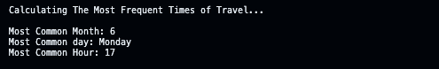
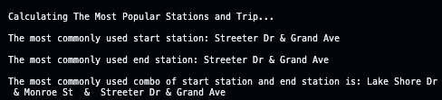
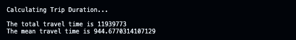
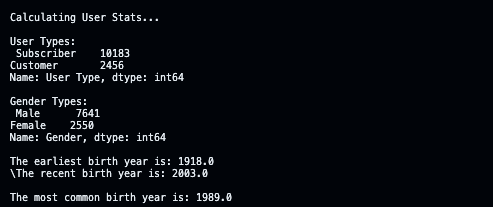
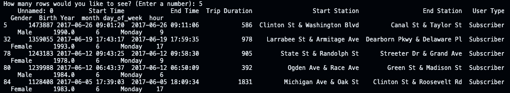
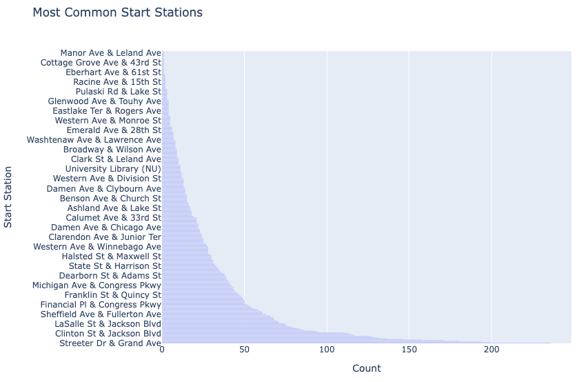
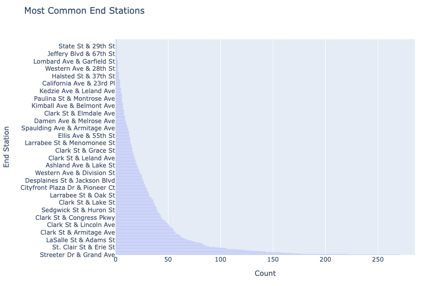
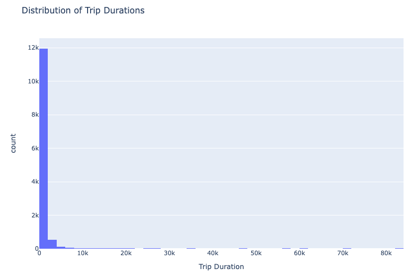
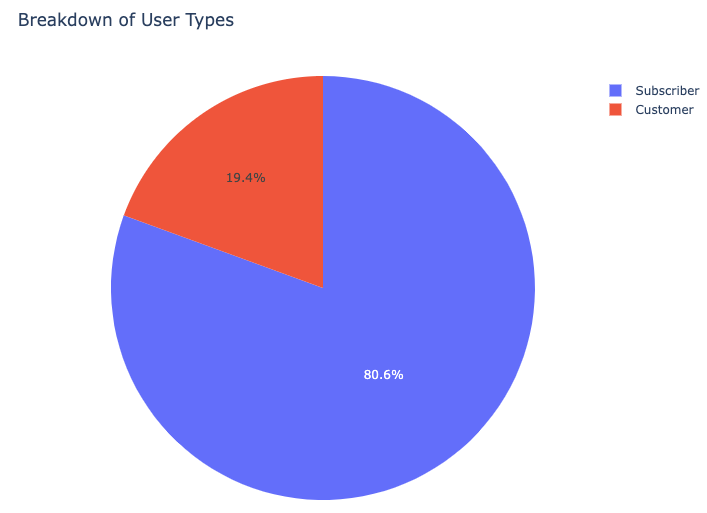

Python Analysis
Case Study
Overview
Over the past decade, bicycle-sharing systems have been growing in number and popularity in cities across the world. Bicycle-sharing systems allow users to rent bicycles on a very short-term basis for a price. This allows people to borrow a bike from point A and return it at point B, though they can also return it to the same location if they'd like to just go for a ride. Regardless, each bike can serve several users per day.
The Goal
Compare the system usage between three large cities: Chicago, New York City, and Washington, DC to uncover bike share patterns.
Objective: Write a python program that is designed to analyze data related to bike-sharing services.
How it Works
This program serves as a virtual assistant to explore and understand how people in Chicago, New York City, and Washington are using bike-sharing services. It's valuable for city planners, researchers, or anyone interested in urban transportation patterns. When you run the program, it will guide you through the following steps:
Insights Provided
Based on your choices, the program will present insights into the following areas:
Busiest Times:
Find out the most popular month, day, and hour for bike travel.

Popular Stations:
Discover the most commonly used starting and ending stations for bike trips.

Trip Duration:
Learn about the total and average duration of bike trips.

User Details:
Get information about users, such as the number of users by type (e.g., subscribers or casual riders), gender distribution, and birth year details.

View Raw Data:
You have the option to view the actual numbers and details behind these insights.

Restart or Exit
After presenting all this information, the program will ask if you want to start over with new choices or end the session.
Full Python CodePython Visuals
-




Additional Information
Skills Used:
siting the sources
Training
Data Analytics training and guidance provided by Masterschool along with Udacity